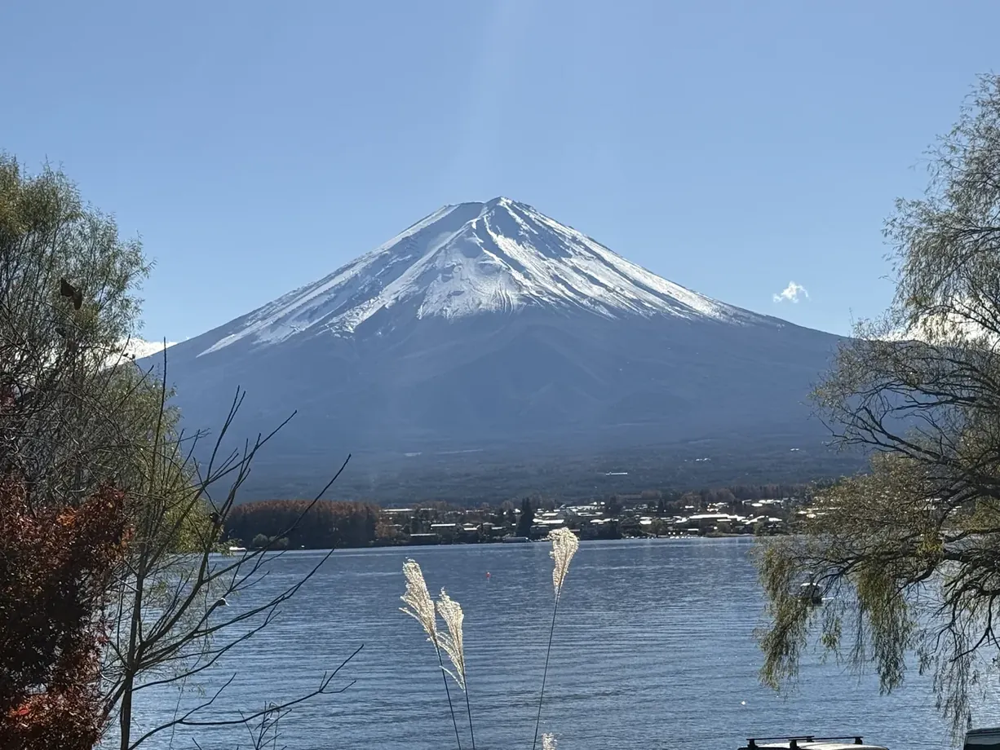

Limbă & cultură · Japonia
Japonia, cuvânt cu cuvânt.
Patru lecții despre familie, hobby-uri, viața de zi cu zi și o oprire la cafenea.
Citește primul capitolPrimele povești din jurnal pornesc de la lucruri familiare. Citește în japoneză, verifică romaji și încearcă exemplele în conversație.